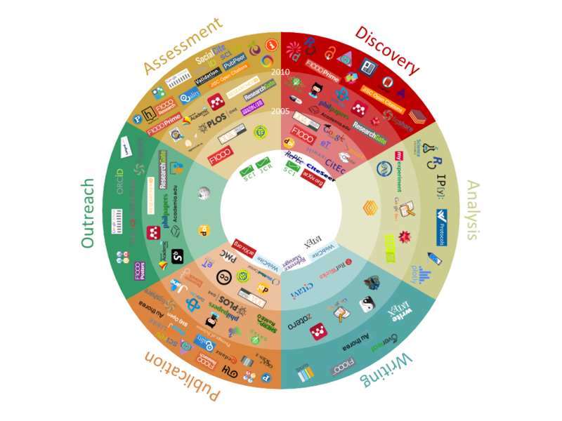
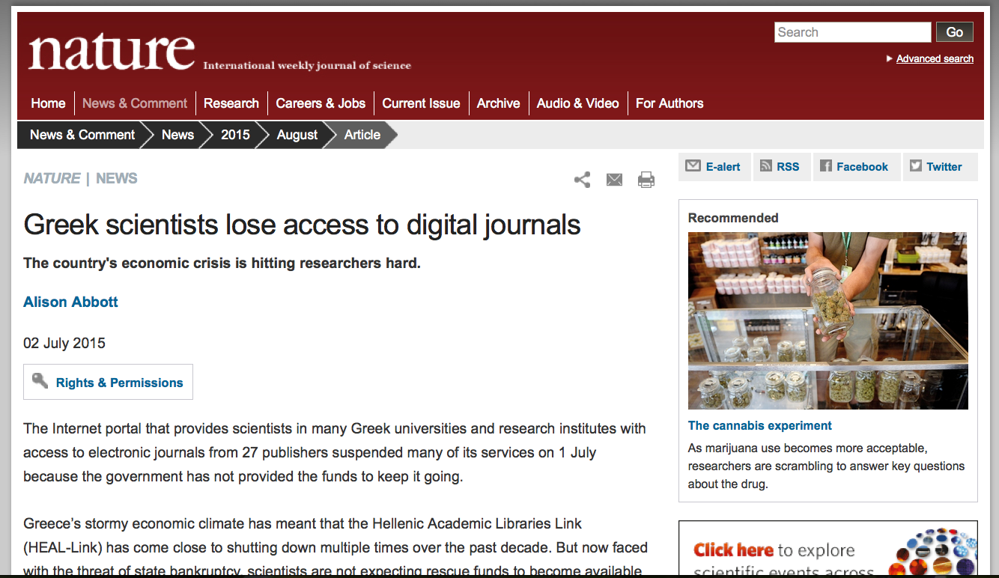
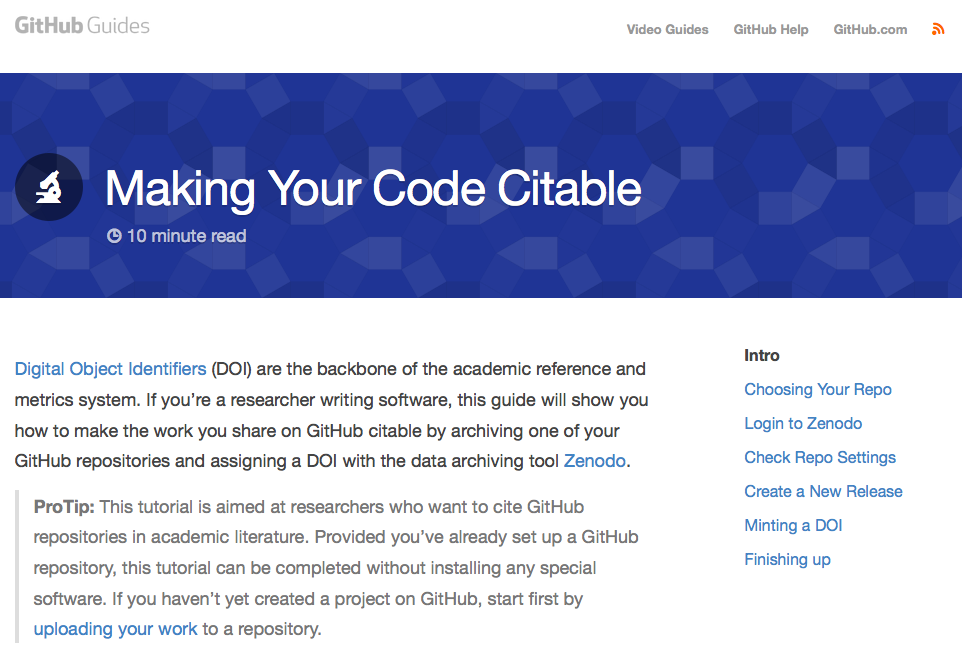
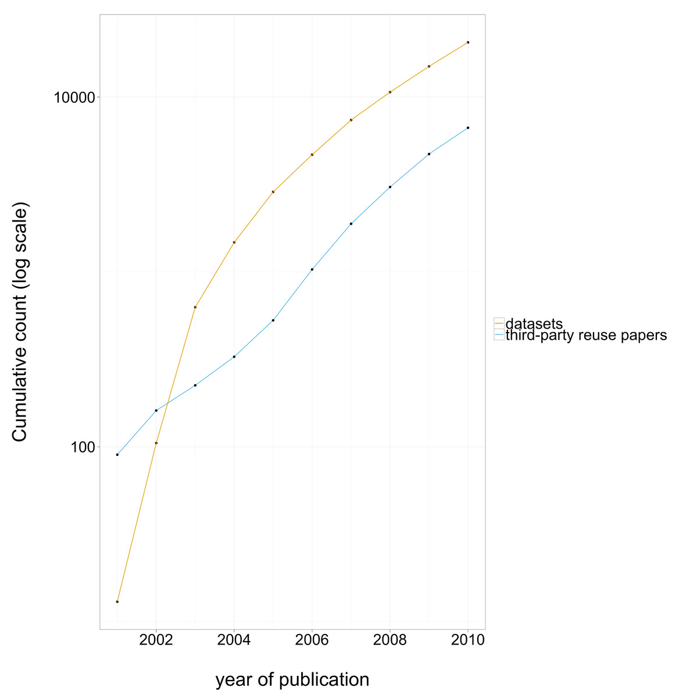
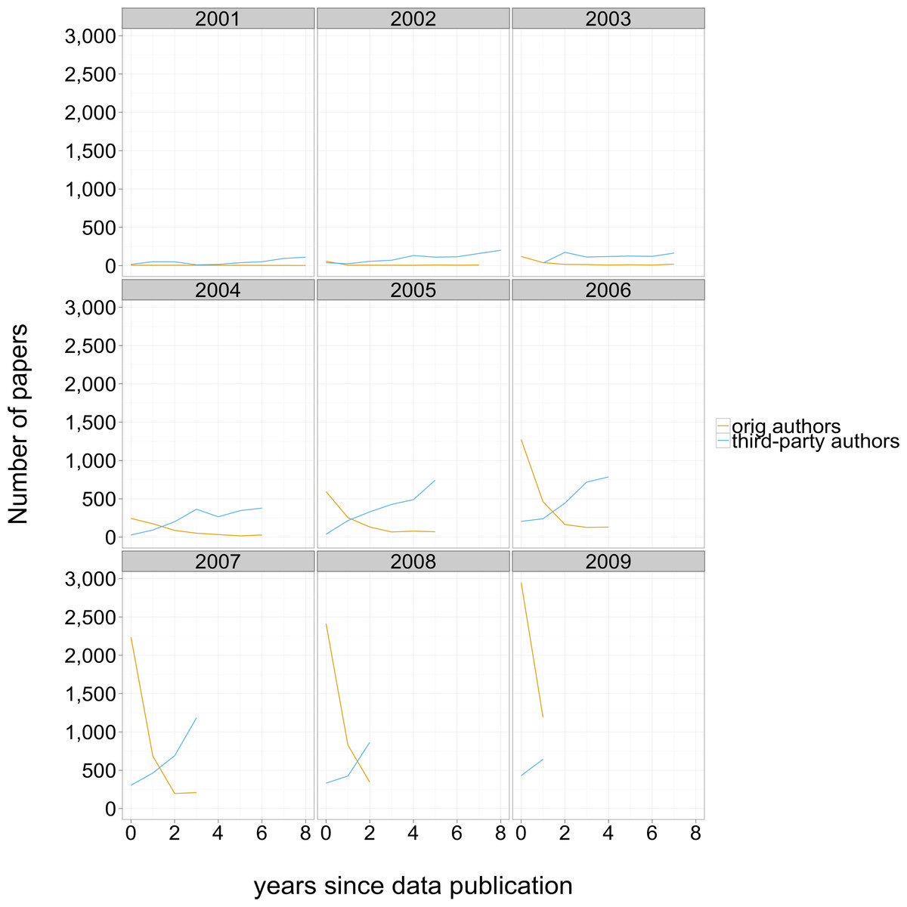

A Practical Introduction to
Open Science
 |
 |
 |
What is open science?
A small open science toolkit:
Open Science methodology
emphasizes:
- transparency
- reuse
- reproducibility
- collaboration
Deeds not words
four action items:
- open access
- open source
- open data
- open communication
1. Open Access


FASTR Act:
- Fair Access to Science & Technology Research Act
- Currently in front of the Senate
- Mandates that federally funded labs release open access versions of all their papers within 6 months of publication.
Get Your Preprints on arxiv
2. Open Source
 |
 |
 |
Open Source Contributor:
- Ability
- Opportunity
- Potential User
- Obviously, Respect
Open Source Scaffolds Reuse
Get feedback on your code
The Discoverability Problem
Software Reuse & Discovery?
Software Citation

Publish & Cite Your Software
3. Open Data

Source: Piwowar HA, Vision TJ. (2013) Data reuse and the open data citation advantage. PeerJ 1:e175 https://dx.doi.org/10.7717/peerj.175

Source: Piwowar HA, Vision TJ. (2013) Data reuse and the open data citation advantage. PeerJ 1:e175 https://dx.doi.org/10.7717/peerj.175